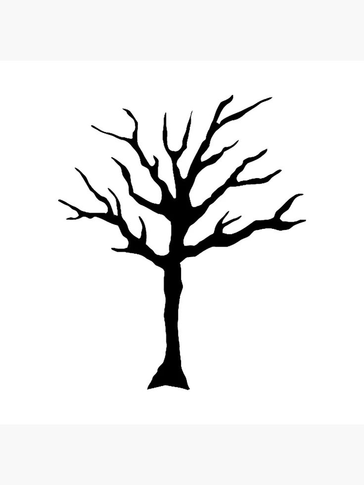

Mehr anzeigen
Du selbst musst die Leere, die in dir wohnt, mit Fülle füllen.

Schwarz ist die Stille, Weiß die Leere - beides trägt keine Farbe, nur das Schweigen zwischen den Tönen.
Verlieren ist auch gewinnen, nur anders...
Wie seltsam, dass schöne Erinnerungen so traurig machen.
Ich bin von Leere umgeben, und doch denke ich nur an dich.
Du selbst musst die Leere, die in dir wohnt, mit Fülle füllen.
Ich mache das Licht aus, und meine Erinnerungen leuchten auf.
Bei ihr habe ich immer ein Komma hingesetzt, weil ein Punkt für mich unmöglich war..
Ein Punkt, kann aber auch ein neue Satzanfang bedeuten..